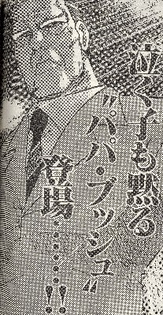

Book review 書壇。
（77）ムダヅモ無き改革
近オリの'06／３月号
この号に掲載された「ムダヅモ無き改革（大和田秀樹）」。コイズミ改革をパロったマンガだが、ばかばかしく面白かった。
しかし４，５月と掲載されなかった。内容も連載的ではないので、単発掲載と思っていた。そしたら６月号に続編が掲載された。

バカバカしさもパロ度も、初弾にまして面白かった。こんな調子で連載されれば、コミック大賞の有力候補。でもタイゾーを狂言回しにしたブッシュとのやりとりはネタ切れのような気がするし。やっぱりこれで掲載終了かな？
それにしても杉村タイゾー様。公私だけでなく架空の世界でも、これほど注目を浴びるとは。当選したときは、１回こっきりの泡沫議員と思っていたが、ひょっとしたら４年後もあるかも。